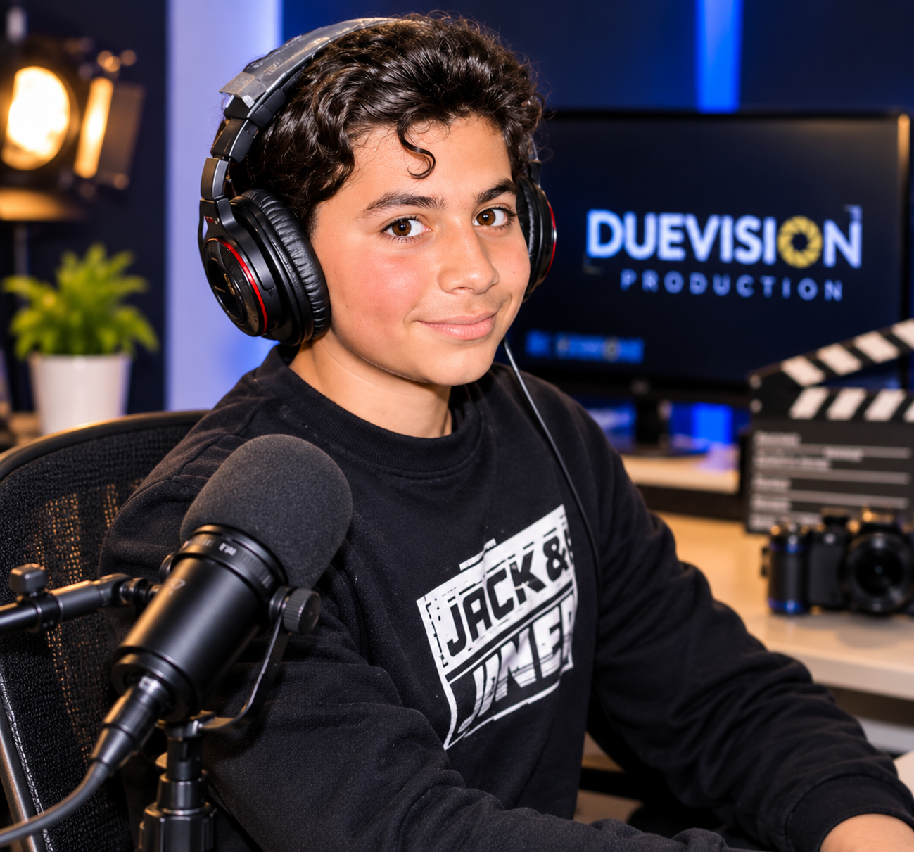
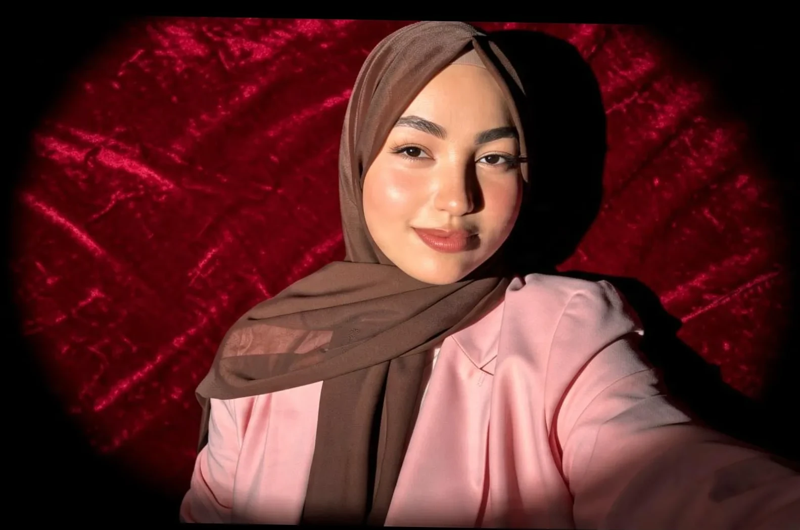

السيرة الذاتية

Yassine Methni
مخرج وصانع محتوى تونسي، شغوف بعالم الإعلام والسينما والثقافة والفنون، ومتخصص في مجال الإنتاج السمعي البصري. مؤسس DUEVISION PRODUCTION، وهو مشروع إبداعي يسعى إلى تقديم رؤية فنية متجددة ومبتكرة في صناعة المحتوى الإعلامي والسمعي البصري، من خلال الجمع بين الإبداع، الاحترافية، والعمل الجماعي. يؤمن بقوة الصورة والكلمة في نقل الأفكار، وصناعة المحتوى الهادف، وتقديم تجارب إبداعية تجمع بين البعد الفني والرسالة الإعلامية.

Malek Belaid
شريكة مؤسسة في DUEVISION PRODUCTION، مهتمة بمجالات الوعي والفلسفة والتنمية النفسية، تسعى إلى استكشاف أعماق الذات الإنسانية وفهم الفكر والسلوك، وتؤمن بأهمية المعرفة والحوار في تطوير الوعي وبناء رؤية أعمق للإنسان والحياة.